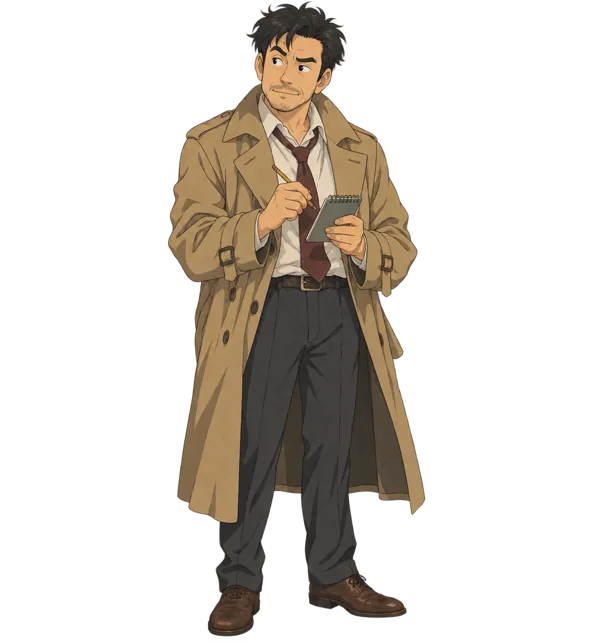

Detective Park is back, and this time you're his partner. Follow a suspect around town, say where they're going with 에, then work out the hard part: 가요 or 와요?
Today's plan
Nothing is timed and you can retry anything. Every 🔊 plays a real Korean voice. At the end, one button copies everything for Canvas.
Before a stakeout, a detective learns the streets. Here is the town you'll be working in. Tap any place to hear its name.
Twelve places from your deck. The suspect will visit most of them today.
Done looks like: 12 pictures matched to their place word.
To say where someone is going, put 에 straight after the place. It means to, and it never changes shape. Then the verb goes last, as always.
학교에, 집에, 노래방에. Batchim or no batchim, it's always 에. For "went," just put 가다 in the past: 갔어요.
Watch the map. When Detective Park asks where the suspect is going, pick the sentence that answers him. A dashed trail with 어제 on it means it happened yesterday.
Done looks like: 8 answers picked, each one the place + 에 + 가요 or 갔어요.

박 형사 · Detective Park
Now you two are in different places, talking on the radio. In Korean, 가다 and 오다 depend on one thing: where the person talking is standing 📍.
⚠️ The trap: Mom calls from the kitchen, "밥 먹어요!"
English shouts back "I'm coming!" But you're in your room, and you're leaving it. Away from where you are = 가요!
Each radio call shows the speaker's 📍 on the map. Watch who moves, then fill the gap. The last two are ★ traps.
Done looks like: 8 radio calls finished with 가요, 와요, 갔어요 or 왔어요, then one radio call of your own.
One button. It collects every part, ready to paste into Canvas.
If the button didn't work, click in this box, select everything (Ctrl+A), and copy (Ctrl+C).